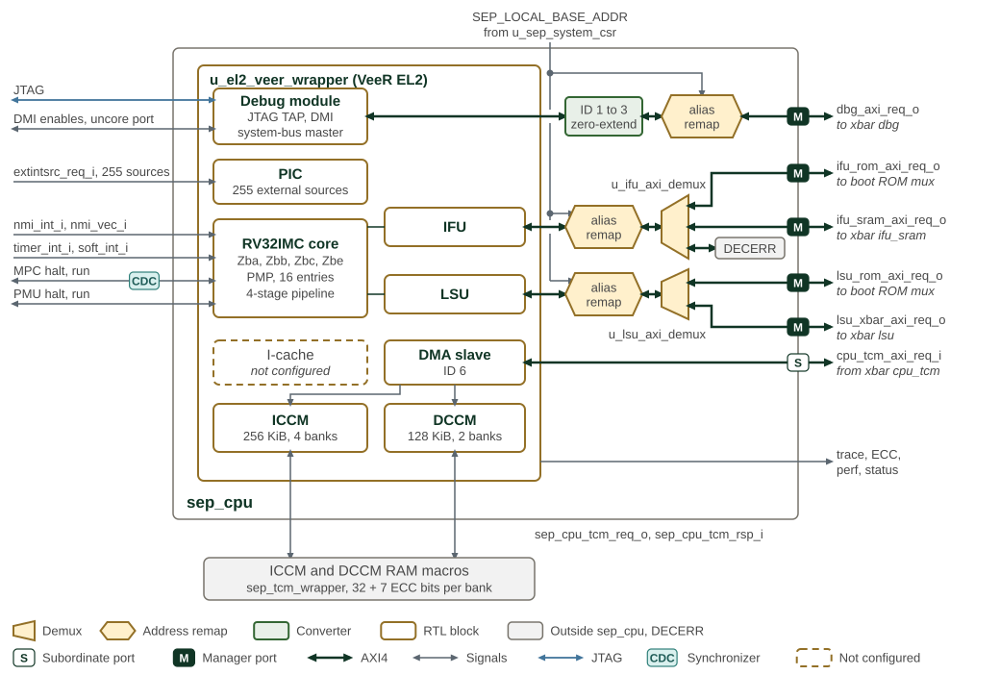

CPU
SEP uses the 32-bit RISC-V VeeR EL2 CPU to run boot and security-service firmware. This chapter describes the SEP configuration, local memories, reset vector and debug integration. The EL2 Programmer’s Reference Manual defines the core programming model.
SEP VeeR EL2 CPU subsystem and memory interfaces shows the CPU subsystem and its instruction, data, and external memory interfaces.

sep_cpu holds the VeeR EL2 core complex, u_el2_veer_wrapper, and the fabric
elements on its bus masters; the figure uses the notation of the
fabric figures. The ICCM and DCCM controllers are part of
the core complex, but their RAM macros sit outside sep_cpu in
sep_tcm_wrapper, each bank 32 data bits plus 7 ECC bits wide. The instruction
cache is not configured. The DMA slave port is the local crossbar’s cpu_tcm
target, the backdoor through which the secure DMA preloads the ICCM and DCCM.
The IFU, LSU and debug system-bus masters are AXI4 with 64-bit data and 3-bit
IDs, and each carries SepSourceId in AxUSER. The debug master’s 1-bit ID is
zero-extended to 3 bits. Each master passes a local alias remap that rewrites the
768 MiB window at SEP_LOCAL_BASE_ADDR to 0x1000_0000. The IFU demux then
sends boot ROM addresses to the boot ROM mux, SEP SRAM addresses to the local
crossbar and everything else to a DECERR responder, and the LSU demux sends boot
ROM addresses to the boot ROM mux and everything else to the local crossbar. The
core and its buses run on the SEP clock. mpc_reset_run_req_i passes a two-flop
synchronizer in sep_cpu; the core synchronizes the NMI, timer, software
interrupt and the other halt and run requests itself.
1. Processor Core
The SEP build configures the core as follows. Optional VeeR capabilities must not be assumed to be present merely because the core supports them.
| Feature | SEP configuration |
|---|---|
Instruction set |
RV32IMC. The bit-manipulation build options enable Zba, Zbb, Zbc and Zbe; Zbf, Zbp, Zbr and Zbs are disabled. |
Pipeline and privilege |
Four-stage pipeline; user-mode support enabled. |
Memory protection |
16 Physical Memory Protection (PMP) entries with Smepmp enabled. |
Memory attributes |
|
Interrupts and timers |
Programmable Interrupt Controller (PIC), configured for 255 external sources, plus two internal timers that can operate independently or be linked. The timers use VeeR-specific |
Debug |
JTAG debug interface and an AXI4 debug master connected to the SEP fabric. |
Dual Core Lock Step (DCLS) |
Disabled in the checked-in SEP configuration. The integration exposes lockstep controls and status for builds that enable it; this does not establish functional-safety compliance. |
The Interrupts chapter owns the source-by-source PIC mapping: SEP CPU Interrupt Vector Map. The Boot ROM chapter describes secure boot and execution unlock.
2. Local Memory
The configured closely coupled memories provide separate instruction and data storage. Their memory macros connect through the SEP CPU memory interface. The instruction cache is disabled in this configuration.
| Memory | Capacity | CPU base address | Protection |
|---|---|---|---|
Instruction Closely Coupled Memory (ICCM) |
256 KiB |
|
7 ECC bits per 32-bit word |
Data Closely Coupled Memory (DCCM) |
128 KiB |
|
7 ECC bits per 32-bit word |
2.1. Dual Scratch Register Banks
The system CSR block supplies two software read/write scratch banks. Each contains eight 32-bit data fields in 64-bit register slots, giving an 8-byte stride. Both banks reset their data to zero. Hardware exposes the field values, but the current system CSR logic does not use them to control behavior.
| Bank | Reset and retention |
|---|---|
Set 0, cold scratch |
Cleared by |
Set 1, warm scratch |
Cleared by either |
The names distinguish watchdog-reset behavior; they do not mean that set 0 can only be cleared by a power-on event. The Clocks and Resets chapter defines these reset boundaries.
2.1.1. Scratch Register Reference
SEP Scratch Address Map
General-purpose SEP scratch register bank.
Register Arrays:
- SCRATCH[8]: 8 registers, base 0x0, stride 0x8
Register List:
| Address | Name | Access | Description |
|---|---|---|---|
| 0x0 - 0x38 | SCRATCH[8] | RW | - |
Register Details:
SCRATCH[8]
| Bits | Field | Access | Reset | Description |
|---|---|---|---|---|
| 63:32 | Reserved | - | - | Reserved |
| 31:0 | data | RW | 0x0 | Scratch register for the CPU |
3. Reset and Boot
The default reset vector points to BL0 in the Boot ROM. The debugger can change that vector as described below. Boot ROM owns the ROM layout, integrity limitations and BL0-to-BL1 boot sequence.
See Boot ROM.
See BL0 boot sequence.
3.1. Configuration Straps
The platform boot-interface requirement is at least eight static configuration straps, preferably sixteen, associated with GPIO pins in the SMC complex. Board pull-up/pull-down resistors or a board controller provide the levels. This is a platform requirement, not a count of strap inputs on the CPU core.
For a GPIO configured as an input by default, its strap latch follows the pad
while cold reset is asserted and holds the level when cold reset is released.
Firmware reads the captured level through the GPIO control registers after
reset release. strap_valid indicates capture support for that pin, not
completion of reset. The GPIO chapter defines capture and register behavior.
BL0 uses platform configuration to select startup options, such as primary or secondary chiplet operation and normal or recovery boot. The board and boot firmware define the assignment of those options to pins.
3.2. Reset Vector
The SEP CPU reset vector is held in a test data register (TDR) in the EL2 debug TAP, selected by JTAG instruction opcode 0x18. The TDR resets to the Boot ROM base address on JTAG reset (TRST assertion or the Test-Logic-Reset TAP state). With that default vector, the CPU starts in the BL0 Root-of-Trust code.
A debugger may redirect the first instruction fetch by shifting an alternate address into the TDR through JTAG while the SEP CPU is held in reset. The TDR stores address bits [31:1]; bit 0 is zero. The programmed value persists until it is rewritten or the TAP is reset; CPU reset alone does not restore the default. This supports bring-up and failure analysis flows that execute from a memory other than the Boot ROM.
4. System Interfaces
4.1. DMA Interface
The DMA engine is described under Peripherals: Direct Memory Access (DMA)
See DMA.
See DMA integration.
5. Debug
The VeeR EL2 debug module is reached from the DTP SEP debug STAP through the core’s JTAG TAP. TAP access is already gated by lifecycle state, so the DMI core aperture is left enabled at the SMU and does not take a second lifecycle check. The DMI uncore aperture is unused: the debug module’s AXI master already reaches the rest of the SEP fabric.
6. Alarm Aggregation Processor (AGP)
The AGP is a proposed addition for a later SEP generation, aimed at edge applications such as automotive and robotics. It is not implemented in the first-generation SEP.
The proposed CPU-programmed monitor would collect and filter alarm events, detect suspected attacks and request countermeasures: wiping sensitive state or resetting selected components, subsystems or the SEP. These are future capabilities, not available alarm-response controls in the current integration.
7. Memory Map and Register Reference
7.1. Memory Map
The SEP subsystem memory map gives the base addresses of the CPU-control and
scratch banks. Offsets below are relative to the CPU-control block base.
The detailed map describes the memory-mapped SEP CPU-control registers;
RISC-V core CSRs such as pmpcfg and mrac are accessed by CSR instructions.
The scratch-bank register layout appears under Local Memory above.
7.2. Detailed Register Map
SEP CPU Control Address Map
SEP CPU control and status registers: PKA and crypto configuration, boot and fast-memory enables, fuse-sense status, and interrupt controls.
Register List:
| Address | Name | Access | Description |
|---|---|---|---|
| 0x8 | CLOCK_GATE_CTRL | RW | TODO: clock-gate control - placeholder fields, not yet implemented. |
| 0x10 | REFERENCE_COUNTER | RW | - |
| 0x18 | TIMEOUT_INTERRUPT | R | Reserved - per-block timeout interrupt not yet implemented. |
| 0x20 | PKA_CTRL | RW | TODO: PKA control - placeholder fields, not yet implemented. |
| 0x28 | TIMEOUT_COUNT_DMA | RW | Reserved - per-block timeout count/threshold not yet implemented. |
| 0x30 | TIMEOUT_COUNT_SYS_IN | RW | Reserved - per-block timeout count/threshold not yet implemented. |
| 0x38 | TIMEOUT_COUNT_MAILBOX_INBOUND | RW | Reserved - per-block timeout count/threshold not yet implemented. |
| 0x40 | TIMEOUT_COUNT_MAILBOX_OUTBOUND | RW | Reserved - per-block timeout count/threshold not yet implemented. |
| 0x48 | TIMEOUT_COUNT_ENTROPY_WRITE | RW | Reserved - per-block timeout count/threshold not yet implemented. |
| 0x50 | TIMEOUT_COUNT_ENTROPY_READ | RW | Reserved - per-block timeout count/threshold not yet implemented. |
| 0x58 | TIMEOUT_COUNT_FILTER_OUT | RW | Reserved - per-block timeout count/threshold not yet implemented. |
| 0x60 | TIMEOUT_COUNT_ALIAS_REMAP | RW | Reserved - per-block timeout count/threshold not yet implemented. |
| 0x68 | TIMEOUT_ENABLE | RW | Reserved - per-block timeout enable not yet implemented. |
| 0x70 | TIMEOUT_CLEAR | W | Reserved - per-block timeout interrupt-clear not yet implemented. |
| 0x78 | TIMEOUT_MODE | W | Reserved - per-block timeout mode not yet implemented. |
| 0xB0 | SEP_TEST_CTRL | R | - |
| 0xC0 | SEP_GLOBAL_BASE_ADDR | RW | - |
| 0xC8 | SEP_LOCAL_BASE_ADDR | RW | - |
| 0xD0 | SEP_REGION_SIZE | RW | - |
| 0x100 | SMU_GLOBAL_BASE_ADDR | RW | - |
| 0x110 | SMU_REGION_SIZE | RW | - |
| 0x140 | SMC_FUSE_SENSE_STATUS | R | - |
| 0x150 | SEP_FUSE_SENSE_STATUS | R | - |
| 0x178 | SEP_SW_DEBUG | RW | - |
| 0x180 | SEP_NMI_VEC | RW | NMI vector address for VeeR-EL2 CPU. The default value is 0xC000_0100. The NMI interrupt is used for the WDT Bark interrupt. WARNING: the reset value is a placeholder, not a usable handler. Firmware must program this register with the address of its own NMI handler, and then set SEP_NMI_VEC_LOCK, before enabling any NMI source (the WDT bark in particular). If a bark arrives while the reset value is still in place, the CPU jumps to 0xC000_0100 in ICCM and executes whatever is there: arbitrary instructions if the loaded image covers that location, or an uncorrectable ICCM ECC error (which itself re-raises NMI) if it does not. |
| 0x188 | SEP_NMI_VEC_LOCK | RW | Lock the NMI vector address. Once locked, the NMI vector address cannot be changed. The NMI interrupt is used for the WDT Bark interrupt. |
| 0x190 | EXT_TRNG_SRC_SEL | RW | Per-stream external TRNG source selection for crypto subsystem entropy muxes. |
| 0x198 | EXT_TRNG_SRC_SEL_LOCK | RW | Lock the TRNG source selection. Once locked, EXT_TRNG_SRC_SEL cannot be changed until reset. |
| 0x1A0 | KM_WIPE_CTRL | RW | Key Manager emergency wipe control. |
| 0x1A8 | DMA_BUS_ERR_STATUS | R | Secure DMA bridge fault status. Each bit is latched in hardware and held until the corresponding DMA_BUS_ERR_CLEAR write. These bits also drive dedicated PIC sources. Neither bit is cleared by a CPU-only reset (the WDT resets the CPU without resetting the DMA), so a bit read as set immediately after boot may describe a fault from before that reset rather than a new one. |
| 0x1B0 | DMA_BUS_ERR_CLEAR | W | Clear the DMA_BUS_ERR_STATUS bits. Writing 1 emits a single-cycle clear pulse to both latches. A fault arriving in the same cycle as the clear still latches, so acknowledging cannot drop a concurrent fault. |
| 0x1B8 | PERIPH_BUS_ERR_STATUS | R | Peripheral register-bridge fault status, one bit per block. Each bit latches when a CPU access to that block's registers returned a TL-UL error response (unmapped or misaligned offset), and is held until the matching PERIPH_BUS_ERR_CLEAR bit is written. The faulting access also received SLVERR synchronously. All bits OR together into a single PIC source, so read this register to identify which block faulted. No bit is cleared by a CPU-only reset (the WDT resets the CPU without resetting the peripherals), so a bit read as set immediately after boot may describe a fault from before that reset rather than a new one. |
| 0x1C0 | PERIPH_BUS_ERR_CLEAR | W | Clear PERIPH_BUS_ERR_STATUS bits. Writing 1 to a bit emits a single-cycle clear pulse to that block's latch; bit order matches PERIPH_BUS_ERR_STATUS. Clears are per-block so acknowledging one block cannot discard a fault another block raised between the status read and this write. A fault arriving in the same cycle as its own clear still latches. |
| 0x1000 | SEP_VERSION_ID | R | - |
Register Details:
CLOCK_GATE_CTRL
| Bits | Field | Access | Reset | Description |
|---|---|---|---|---|
| 63:1 | Reserved | - | - | Reserved |
| 0 | pka_cg_enable | RW | 0x0 | Reserved - PKA clock-gate enable, not yet implemented. |
REFERENCE_COUNTER
| Bits | Field | Access | Reset | Description |
|---|---|---|---|---|
| 63:0 | rc | RW | 0x0 | SEP REFERENCE COUNTER, counting after deassert of cold reset |
TIMEOUT_INTERRUPT
| Bits | Field | Access | Reset | Description |
|---|---|---|---|---|
| 63:1 | Reserved | - | - | Reserved |
| 0 | reserved | R | 0x0 | Reserved - timeout interrupt status not yet implemented. |
PKA_CTRL
| Bits | Field | Access | Reset | Description |
|---|---|---|---|---|
| 63:3 | Reserved | - | - | Reserved |
| 2 | pka_noise_src_valid | RW | 0x0 | Reserved - PKA noise source valid, not yet implemented. |
| 1 | pka_noise_src | RW | 0x0 | Reserved - PKA noise source select, not yet implemented. |
| 0 | pka_dpa_disable | RW | 0x0 | Reserved - disable DPA countermeasures in PKA, not yet implemented. |
TIMEOUT_COUNT_DMA
| Bits | Field | Access | Reset | Description |
|---|---|---|---|---|
| 63:1 | Reserved | - | - | Reserved |
| 0 | reserved | RW | 0x0 | Reserved - timeout count not yet implemented. |
TIMEOUT_COUNT_SYS_IN
| Bits | Field | Access | Reset | Description |
|---|---|---|---|---|
| 63:1 | Reserved | - | - | Reserved |
| 0 | reserved | RW | 0x0 | Reserved - timeout count not yet implemented. |
TIMEOUT_COUNT_MAILBOX_INBOUND
| Bits | Field | Access | Reset | Description |
|---|---|---|---|---|
| 63:1 | Reserved | - | - | Reserved |
| 0 | reserved | RW | 0x0 | Reserved - timeout count not yet implemented. |
TIMEOUT_COUNT_MAILBOX_OUTBOUND
| Bits | Field | Access | Reset | Description |
|---|---|---|---|---|
| 63:1 | Reserved | - | - | Reserved |
| 0 | reserved | RW | 0x0 | Reserved - timeout count not yet implemented. |
TIMEOUT_COUNT_ENTROPY_WRITE
| Bits | Field | Access | Reset | Description |
|---|---|---|---|---|
| 63:1 | Reserved | - | - | Reserved |
| 0 | reserved | RW | 0x0 | Reserved - timeout count not yet implemented. |
TIMEOUT_COUNT_ENTROPY_READ
| Bits | Field | Access | Reset | Description |
|---|---|---|---|---|
| 63:1 | Reserved | - | - | Reserved |
| 0 | reserved | RW | 0x0 | Reserved - timeout count not yet implemented. |
TIMEOUT_COUNT_FILTER_OUT
| Bits | Field | Access | Reset | Description |
|---|---|---|---|---|
| 63:1 | Reserved | - | - | Reserved |
| 0 | reserved | RW | 0x0 | Reserved - timeout count not yet implemented. |
TIMEOUT_COUNT_ALIAS_REMAP
| Bits | Field | Access | Reset | Description |
|---|---|---|---|---|
| 63:1 | Reserved | - | - | Reserved |
| 0 | reserved | RW | 0x0 | Reserved - timeout count not yet implemented. |
TIMEOUT_ENABLE
| Bits | Field | Access | Reset | Description |
|---|---|---|---|---|
| 63:1 | Reserved | - | - | Reserved |
| 0 | reserved | RW | 0x0 | Reserved - timeout monitors not yet implemented. |
TIMEOUT_CLEAR
| Bits | Field | Access | Reset | Description |
|---|---|---|---|---|
| 63:1 | Reserved | - | - | Reserved |
| 0 | reserved | W 1P | 0x0 | Reserved - timeout monitors not yet implemented. |
TIMEOUT_MODE
| Bits | Field | Access | Reset | Description |
|---|---|---|---|---|
| 63:1 | Reserved | - | - | Reserved |
| 0 | reserved | W | 0x0 | Reserved - timeout monitors not yet implemented. |
SEP_TEST_CTRL
| Bits | Field | Access | Reset | Description |
|---|---|---|---|---|
| 31 | fast_spi_en | R | 0x0 | Fast SPI Enable |
| 30 | fast_iccm_en | R | 0x0 | Fast ICCM Enable |
| 29 | fast_dccm_en | R | 0x0 | Fast DCCM Enable |
| 28 | fast_sram_en | R | 0x0 | Fast SRAM Enable |
| 27 | fast_pka_en | R | 0x0 | Fast PKA Enable |
| 26 | sep_standalone | R | 0x0 | SEP is standalone (not part of eg SMU) |
| 25:0 | Reserved | - | - | Reserved |
SEP_GLOBAL_BASE_ADDR
| Bits | Field | Access | Reset | Description |
|---|---|---|---|---|
| 63:56 | Reserved | - | - | Reserved |
| 55:0 | addr | RW | 0x0 | - |
SEP_LOCAL_BASE_ADDR
| Bits | Field | Access | Reset | Description |
|---|---|---|---|---|
| 63:56 | Reserved | - | - | Reserved |
| 55:0 | addr | RW | 0xD0000000 | - |
SEP_REGION_SIZE
| Bits | Field | Access | Reset | Description |
|---|---|---|---|---|
| 63:32 | Reserved | - | - | Reserved |
| 31:0 | size | RW | 0x1000000 | - |
SMU_GLOBAL_BASE_ADDR
| Bits | Field | Access | Reset | Description |
|---|---|---|---|---|
| 63:56 | Reserved | - | - | Reserved |
| 55:0 | addr | RW | 0x80000000 | - |
SMU_REGION_SIZE
| Bits | Field | Access | Reset | Description |
|---|---|---|---|---|
| 63:32 | Reserved | - | - | Reserved |
| 31:0 | size | RW | 0x40000000 | - |
SMC_FUSE_SENSE_STATUS
| Bits | Field | Access | Reset | Description |
|---|---|---|---|---|
| 63:1 | Reserved | - | - | Reserved |
| 0 | smc_fuse_sense_done | R | 0x0 | This bit indicates when SMC's fuse sense is completed. While fuse sense if ongoing, SMC fabric will be in reset. Any requests to the SMC will hang. When this is 1, it is safe to send requests to the SMC. |
SEP_FUSE_SENSE_STATUS
| Bits | Field | Access | Reset | Description |
|---|---|---|---|---|
| 63:1 | Reserved | - | - | Reserved |
| 0 | sep_fuse_sense_done | R | 0x0 | This reg is used to indicate the fuse sense status of SEP. |
SEP_SW_DEBUG
| Bits | Field | Access | Reset | Description |
|---|---|---|---|---|
| 63:32 | Reserved | - | - | Reserved |
| 31:0 | sep_sw_debug | RW | 0x0 | software writtable debug information. This reg is routed to CLA |
SEP_NMI_VEC
| Bits | Field | Access | Reset | Description |
|---|---|---|---|---|
| 63:32 | Reserved | - | - | Reserved |
| 31:1 | nmi_vec | RW | 0x60000080 | NMI vector address [31:1] for VeeR-EL2 CPU. Bit 0 is always 0 (aligned). Address where CPU jumps on Non-Maskable Interrupt. This is used for the WDT Bark interrupt. The reset value does not point at a valid handler -- see the register description for the required programming order. |
| 0 | rsvd | R | 0x0 | Reserved, bit 0 is always 0 (aligned) |
SEP_NMI_VEC_LOCK
| Bits | Field | Access | Reset | Description |
|---|---|---|---|---|
| 63:1 | Reserved | - | - | Reserved |
| 0 | lock | RW1S | 0x0 | Lock the NMI vector address. Once locked, the NMI vector address cannot be changed. The NMI interrupt is used for the WDT Bark interrupt. |
EXT_TRNG_SRC_SEL
| Bits | Field | Access | Reset | Description |
|---|---|---|---|---|
| 63:3 | Reserved | - | - | Reserved |
| 2:0 | sel | RW | 0x7 | TRNG source select per stream. Bit N selects the source for stream N (bit0 = Key Manager, bit1 = crypto blocks, bit2 = entropy pool). 0 = internal DRBG output, 1 = external TRNG (default). |
EXT_TRNG_SRC_SEL_LOCK
| Bits | Field | Access | Reset | Description |
|---|---|---|---|---|
| 63:1 | Reserved | - | - | Reserved |
| 0 | lock | RW1S | 0x0 | Lock TRNG source selection. Once set, cannot be cleared by software. |
KM_WIPE_CTRL
| Bits | Field | Access | Reset | Description |
|---|---|---|---|---|
| 63:1 | Reserved | - | - | Reserved |
| 0 | wipe_state | RW | 0x0 | Key Manager wipe state. A rising edge zeroes all KPV entries and sets the WIPE_STATE interrupt status. |
DMA_BUS_ERR_STATUS
| Bits | Field | Access | Reset | Description |
|---|---|---|---|---|
| 63:2 | Reserved | - | - | Reserved |
| 1 | host_path_err | R | 0x0 | DMA-master-path fault: either the fabric returned a non-OKAY AXI response to a DMA transfer, or a TL-UL command-integrity check failed on a command issued by the DMA. The latter is a fault-detection event with no other reporting path. |
| 0 | reg_path_err | R | 0x0 | Register-path bus error: a CPU access to a Secure DMA register returned a TL-UL error response (unmapped or misaligned offset). The faulting access also received SLVERR synchronously. |
DMA_BUS_ERR_CLEAR
| Bits | Field | Access | Reset | Description |
|---|---|---|---|---|
| 63:1 | Reserved | - | - | Reserved |
| 0 | clr | W 1P | 0x0 | Write 1 to clear both DMA_BUS_ERR_STATUS bits. Always reads 0. |
PERIPH_BUS_ERR_STATUS
| Bits | Field | Access | Reset | Description |
|---|---|---|---|---|
| 63:7 | Reserved | - | - | Reserved |
| 6 | wdt | R | 0x0 | Watchdog timer register bridge error. |
| 5 | edn | R | 0x0 | EDN register bridge error (DRBG EDN path). |
| 4 | csrng | R | 0x0 | CSRNG register bridge error (DRBG CSRNG path). |
| 3 | otbn | R | 0x0 | OTBN register bridge error. |
| 2 | kmac | R | 0x0 | KMAC register bridge error. |
| 1 | hmac | R | 0x0 | HMAC register bridge error. |
| 0 | aes | R | 0x0 | AES register bridge error. |
PERIPH_BUS_ERR_CLEAR
| Bits | Field | Access | Reset | Description |
|---|---|---|---|---|
| 63:7 | Reserved | - | - | Reserved |
| 6 | wdt | W 1P | 0x0 | Write 1 to clear PERIPH_BUS_ERR_STATUS.wdt. Always reads 0. |
| 5 | edn | W 1P | 0x0 | Write 1 to clear PERIPH_BUS_ERR_STATUS.edn. Always reads 0. |
| 4 | csrng | W 1P | 0x0 | Write 1 to clear PERIPH_BUS_ERR_STATUS.csrng. Always reads 0. |
| 3 | otbn | W 1P | 0x0 | Write 1 to clear PERIPH_BUS_ERR_STATUS.otbn. Always reads 0. |
| 2 | kmac | W 1P | 0x0 | Write 1 to clear PERIPH_BUS_ERR_STATUS.kmac. Always reads 0. |
| 1 | hmac | W 1P | 0x0 | Write 1 to clear PERIPH_BUS_ERR_STATUS.hmac. Always reads 0. |
| 0 | aes | W 1P | 0x0 | Write 1 to clear PERIPH_BUS_ERR_STATUS.aes. Always reads 0. |
SEP_VERSION_ID
| Bits | Field | Access | Reset | Description |
|---|---|---|---|---|
| 63:32 | Reserved | - | - | Reserved |
| 31:0 | version_id | R | 0xDEADBEEF | Version ID for the CPU |